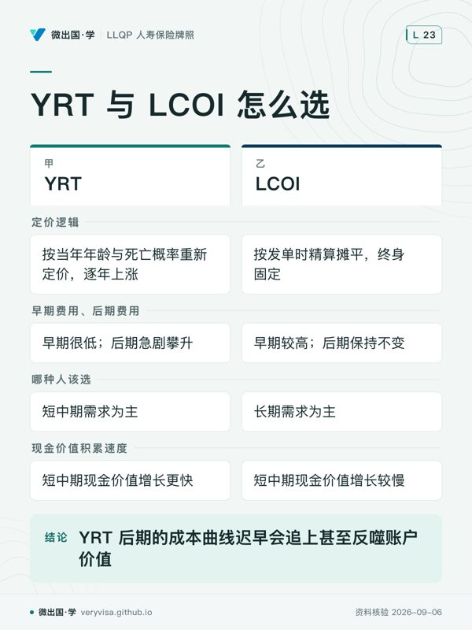

🃏 Flashcards · 3 闪卡 · 3 张 🖼 Slides · 2 幻灯 · 2 页 ✍️ Questions · 7 刷题 · 7 道
人寿保险 Life Insurance P1 必拿分 P1 Must score
ZH EN ZH + EN
先看这一章怎么考 First, how this chapter is tested
三要素拆分与良性循环推导题：给出保费缴入、账户价值变化与死亡给付方式，考察保费税（premium tax）、保险成本（COI）、净风险保额（NAAR）与累积账户（accumulating fund）之间的扣费先后顺序及因果链条。 Unbundled three elements and virtuous circle deduction questions: Presenting premium deposits, account value fluctuations, and death benefit options, testing the sequential deduction order and causal chain among premium tax, cost of insurance (COI), net amount at risk (NAAR), and the accumulating fund. YRT 与 LCOI 成本曲线匹配题：给出客户的持有期限（如短中期 10–15 年或终身持有）、预算及现金价值积累诉求，测试该选择逐年更新定期成本（YRT）还是平准保险成本（LCOI），以及长期只缴最低保费配合 YRT 导致保单枯竭的机制。 YRT versus LCOI cost curve matching questions: Providing a client's holding horizon (such as short-to-medium term of 10 to 15 years or lifetime holding), budget, and cash value accumulation goals, testing whether to recommend yearly renewable term (YRT) or level cost of insurance (LCOI), as well as the mechanics of policy depletion caused by long-term minimum funding under YRT. 平额与平额加账户价值对比题：通过对比受益人最终所得与每月扣费高低，考察净风险保额（NAAR）在不同身故给付方式下是否随账户价值增长而缩减，识别「良性循环」在何种给付方式下生效。 Level versus level plus account value comparison questions: Comparing the beneficiary's net payout with monthly deduction amounts, testing whether the net amount at risk (NAAR) decreases as account value grows under different death benefit options, and identifying under which option the virtuous circle takes effect. 最常丢分的陷阱（看到题干信号就警觉） Traps that cost the most marks (watch for the signal in the stem)
期缴溢价假定陷阱 Modal factor premium surcharge assumption trap 题干讨论万能寿险（UL）的月缴、季缴或半年缴与年缴保费总额差异，或要求计算期缴附加费。 The question stem discusses the difference in annualized total premiums between monthly, quarterly, or semi-annual payments and annual payments in universal life (UL), or asks to calculate a modal surcharge. YRT前期低价幻觉 Illusion of low initial YRT pricing 题干同时出现「打算持有至终身/高龄」「选择 YRT 成本结构」以及「长期按最低缴费（minimally funded）支付」。 The question stem simultaneously mentions intending to hold the policy for life or into old age, selecting a YRT cost structure, and paying only minimum funding over the long term. NAAR与给付方式倒置 Inverting NAAR and death benefit options 题干指定死亡给付方式为「平额加账户价值（level death benefit plus account value）」，并询问账户增值对当期 COI 扣费或 NAAR 的影响。 The question stem specifies the death benefit option as level death benefit plus account value and asks about the impact of account growth on current COI charges or NAAR. 本章考点页：导图、要点表、7 道带逐项解析的练习 →
核实日期：2026-09-06｜本页「2026 市场」一节所列产品线均于当日回源核实，出处见文末；「2026 现行利率环境」引用加拿大央行现行政策利率。
复核周期：2027-09-01。免税测试与保单分代机制本身长青，具体保司产品线名称与利率环境每年应回查一次。
0. 这一篇解决什么问题
你要考的是 人寿保险模块 ，本篇对应 CISRO 能力组件 c2「分析可用产品」，占本模块 30%——万能寿险（universal life insurance，UL）是这个组件里结构最复杂、也是全模块最容易被代理人自己讲错的一款产品。
万能寿险不是「终身寿险的升级版」，它是把终身寿险捆在一起卖的三样东西——保障、费用、投资 ——拆开，分别摆在客户面前，让客户自己选怎么配。这份透明度是它最大的卖点，也是它最大的风险来源：拆开之后，客户要自己承担的选择变多了，而每一个选择都有一条容易被忽略的后果。
这一篇帮你做到三件事：① 看懂一张万能寿险保单账户价值表，说清楚每一笔扣费和每一笔投资回报是怎么来的；② 给出一个客户的年龄、需求、预算，判断该建议 YRT 还是 LCOI、该选哪种死亡给付方式；③ 说清楚「最低缴费」「最高缴费」「免税测试」三个词分别在保护谁、限制谁。
一、制度设计与底层逻辑：拆开之后，谁在管什么 本节回答 This section answers 解释三要素拆分后保司与客户的责任边界及三项可调自由度 Explaining insurer and client responsibility boundaries after unbundling and the three flexible parameters. 本章考题 1 Question 1
1. 拆分（unbundling）：透明度换来的是责任转移
定期险和分红终身寿险都是捆绑产品 ：你缴一笔固定保费，保险公司在幕后完成死亡成本计算、费用扣除、盈余分配这一整套精算工作，你看不到、也不用管中间过程。万能寿险反过来，把这套幕后工作拆成三条看得见的账摆在保单持有人面前：
保险成本 （cost of insurance，COI）——保险公司为承担死亡风险按月/按年从账户里扣的钱；费用 （保费税、管理费）——保费进账户前先被扣掉的省级保费税，以及账户维护费用；投资账户 （accumulating fund）——扣完前两项剩下的钱，进入客户自己选定的账户滚动增值。
三条账各自独立、各自可见，这是万能寿险区别于终身寿险最根本的一点：终身寿险把投资权留在保险公司手里，万能寿险把投资权交还给客户 。代价是客户从此要承担一部分原本由保险公司统一吸收的风险与决策责任——这条置换，是理解本章几乎所有后续机制的钥匙。
2. 灵活性从哪来：三个可调项
拆分之后，客户获得了三项可调的自由度：缴费的时间与金额 （在合同和免税测试范围内可以调整；停缴仍须有足够价值支付扣费）、保额（可增可减，增加需要核保）、被保险人（部分合同允许承保多人或经核保后新增、替换被保险人，不能推定每张 UL 均有此权利）。这三项自由度合起来，让万能寿险能够随着客户人生阶段的变化而调整，而不必像定期险或终身寿险那样，一旦需求变了就得重新买一张新单。
3. 保险公司与客户在博弈什么：透明之后责任在谁
保险公司让渡了投资决定权，但没有让渡精算风险——保险成本的定价逻辑、保证利率的下限，仍然由保险公司设定并写进合同。客户拿到的是「自己选投资、自己承担投资结果」的自由，同时也拿到了「账户价值不够，保单可能失效」的责任。这条博弈的法律后果非常具体：如果客户长期只缴最低保费、又提取过账户价值、又赶上投资回报不佳，保单可能在客户毫无察觉的情况下滑向失效边缘——客户须关注账户和扣费，保险人及代理人的合同、通知和适当性义务仍须履行，不能仅凭投资由客户选择就预先免除其责任。
✕
「万能」不等于「怎么缴都行」
万能寿险的缴费灵活性有一条隐藏的下限：账户价值必须始终盖得住每月扣除的保险成本与费用。四种最容易导致账户价值不足、进而危及保单存续的情形是：长期只缴最低缴费 、曾经大额提取账户价值、减少或停缴保费、以及投资回报低于预期甚至为负。这四条不是互相独立的小知识点，而是同一个风险的四种触发方式——代理人每年至少要帮客户看一次账户价值表，而不是卖出去就不管了。
节末检索小测 · 先别往回翻，凭记忆作答 Quick recall check: answer from memory before scrolling back
An advisor is explaining to a prospective policyholder how a universal life policy differs from a traditional whole life policy after its core components are unbundled. Which of the following accurately describes who bears the investment decision-making authority and the resulting risk of policy lapse?
一位顾问正向准保单持有人解释万能寿险在核心要素拆分后与传统终身寿险有何不同。下列哪项准确描述了谁掌握投资决定权以及由此产生的保单失效风险？
a The insurer keeps full control of the investment mix and promises that the policy cannot lapse as long as the initial minimum premium is paid. ✗ 这混淆了捆绑型终身寿险与万能寿险（universal life insurance）。拆分（unbundling）之后，保险公司把投资决定权交还给了客户，且最低缴费并不等于合同承诺保单终身不失效。 Conflates bundled whole life with universal life insurance. After unbundling, the insurer returns investment decision-making power to the client, and paying the minimum premium does not constitute a contractual guarantee that the policy will never lapse.
b The policyholder picks the accounts and bears the lapse risk from weak returns or underfunding; the insurer and advisor keep their duties. ✓ 万能寿险通过要素拆分（unbundling）将投资账户（accumulating fund）的选择权交给保单持有人，持有人须承担投资表现不佳或缴费不足导致账户价值盖不住扣费而失效的风险；同时保险人和代理人的合同、通知及适当性义务依然存在，不能以客户自选投资为由预先免除。 Correct. Universal life unbundles core elements to grant accumulating fund selection to the policyholder, who must assume the risk of policy lapse if poor returns or underfunding leave the account insufficient to cover deductions; simultaneously, the insurer's and advisor's contractual, notification, and suitability duties remain intact and cannot be pre-emptively disclaimed merely because the client chose the investments.
c The policyholder alone must calculate the monthly mortality charges, while the insurer absorbs any negative returns in the index-linked accounts. ✗ 颠倒了双方职责：保险成本（cost of insurance, COI）的定价逻辑与精算风险仍由保险公司设定并写入合同，而指数或基金联动账户的亏损风险由保单持有人自己承担。 Inverts the parties' responsibilities. The pricing logic and actuarial risk of the cost of insurance (COI) are determined by the insurer and set in the contract, whereas the risk of losses in index-linked or fund-linked accounts is borne by the policyholder.
d The policyholder may replace the life insured or raise the face amount at any time without underwriting, because unbundling moves all risk to them. ✗ 属于过度泛化可调项陷阱：虽然万能寿险具有保额和被保险人可调的灵活性，但增加保额需要重新核保，且只有部分合同允许经核保后新增或替换被保险人，不能推定每张保单都可无条件操作。 Falls into the 'overgeneralizing adjustable features' trap. Although universal life offers adjustable face amounts and lives insured, increasing coverage requires medical underwriting, and only certain contracts permit adding or replacing a life insured subject to underwriting; one cannot assume every contract permits this unconditionally.
看答案与每个选项的解析 Show the answer and why each option is right or wrong 答案 Answer ：b
二、2026 现行政策与数字：免税测试为什么存在，考试口径的利率假设为什么该被重新看 本节回答 This section answers 说明最低与最高缴费边界、免税测试作用及演示件双利率要求 Explaining minimum and maximum funding boundaries, the function of the exemption test, and dual interest rate illustration requirements. 本章考题 2 Question 2
1. 最低缴费与最高缴费：两条边界为什么都必须存在
万能寿险的缴费区间被两条边界卡住，这两条边界解决的是完全不同的问题：
最低缴费 （minimally funded）——只够覆盖当期保险成本与费用，考试口径说明最低建议缴费以维持至指定年龄为设计目标（例为 100 岁），不等于终身保证；实际扣费、回报和提款变化后仍可能不足。这条边界解决的是「客户只想买保障，不想往里存钱」这一需求。最高缴费 （maximum funded）——受免税测试（exemption test）的上限约束，超过可接受上限时，保险人可能拒收、退款或按合同转入保单外应税侧基金；不能假定任何超额都会自动处理而不影响免税资格。这条边界解决的是相反的问题：防止万能寿险被当成一个披着保险外壳的免税储蓄账户。
两条边界合起来，划出了万能寿险「保障」与「投资」两种功能各自的合法空间。中间这段区间，才是保单持有人真正可以自由决定「多存一点还是少存一点」的地方。
2. 免税测试：只讲机制与后果，不展开公式
免税测试的存在理由，和上一篇讲寿险与税那一章的逻辑完全一致：税法要划一条线，把「保险该有的保障功能」和「超出保障所需的投资功能」分开对待 。做法是保险公司每个保单周年日，拿一份精算规则规定的假想基准保单去比对客户实际账户价值——如果账户价值涨得比这份基准还快，说明这份合同已经越来越像纯投资工具，就要求客户提取超出部分，否则保单可能永久丧失免税身份。
这套测试背后的精算参数在 2017 年 1 月 1 日 经历了一次重大更新——考试口径在本章导言部分罕见地自己标出这是一处版次分水岭，明确提示读者：2017 年之后对旧保单做某些调整，可能导致既得权利丧失。这条机制与保单「代次」（G1/G2/G3）划分直接相关，具体的分界日期、代次判定与税务后果，本课程另一篇讲寿险与税的文章已经完整展开，本页不重复展开公式与代次细节，只强调一点对代理人最实用的执业提示：
⚠️
2016 年及以前签发的存量保单，改动前先查代次
客户拿着一张 2016 年或更早签发的万能寿险来找你，想增加保额、转换保单类型、或更换被保险人——在动手之前，先确认这张保单现在是哪一代 。某些操作会让原本更优惠的代次「降级」，客户可能因此永久丧失更宽松的免税测试参数，而这个后果往往要等很多年后才会显现，届时已经无法挽回。
3. 考场与现行对照表：考试口径举例的利率假设 vs 2026 现行利率环境
考试口径要求万能寿险的保单演示件（policy illustration）必须附至少两套投资回报假设 ——「现行利率」与「一套明显更低的利率」——并要求持有人签字确认理解这两套数字都不是保证。考试口径本身没有把「现行利率」钉死成一个具体数字，这恰恰是问题所在：考试口径定稿于加拿大央行政策利率正从疫情低点急速攀升的加息周期起点附近，而现行利率环境已经历了完整的一轮加息与之后的降息，同一份「现行利率」假设，在不同年份代表的实际增值能力完全不同。
以谁为准 ：考试口径举例的数字只用于演示「拆分之后账户价值怎么滚动」这套方法论，方法长青，具体利率数字必须替换成保司当下出具的演示件；柜台对客户展示任何演示件都要用现行利率，不能援引考试口径年份的例子当作承诺。
节末检索小测 · 先别往回翻，凭记忆作答 Quick recall check: answer from memory before scrolling back
Before a client signs an application for a universal life policy that includes equity-linked investment accounts, what does the exam standard require regarding the policy illustration provided to the client?
在客户签署包含权益联动投资账户的万能寿险投保申请前，考试口径对提供给客户的保单演示件有何要求？
a It must display at least two investment return assumptions—a current rate and a noticeably lower rate—and require the policyholder's signature acknowledging that neither rate is guaranteed. ✓ 按考试口径，万能寿险的保单演示件（policy illustration）必须附至少两套投资回报假设（「现行利率」与「一套明显更低的利率」），并由保单持有人签字确认理解这两套数字都不是保证；实务柜台展示时还必须使用保司当下公布的现行利率重新出具。 Correct. According to exam benchmarks, universal life policy illustrations must include at least two investment return assumptions (the current rate and a noticeably lower rate), and the policyholder must sign acknowledging that neither figure is guaranteed; at the sales counter, illustrations must be reissued using the insurer's currently published rates.
b It must lock in the central bank's current overnight policy rate of 2.25% as a permanent minimum return across all chosen accounts for the life of the contract. ✗ 混淆了宏观政策利率与合同保证利率：加拿大央行现行政策利率 2.25% 既不是保单演示件锁定的保证回报，也不能直接替代保证投资账户（GIA）报价或权益联动回报。 Conflates macroeconomic policy rates with contractual guarantees. The Bank of Canada's overnight rate of 2.25% is neither a guaranteed return locked into an illustration nor a direct substitute for guaranteed investment account (GIA) rates or equity-linked returns.
c It must guarantee that if the policy is minimally funded, the account value will automatically pass the annual exemption test and remain in force until age 100 without further review. ✗ 混淆了最低缴费（minimally funded）的设计目标与合同保证：考试口径说明最低建议缴费以维持至指定年龄（例为 100 岁）为设计目标，但不等于合同承诺终身有效，实际回报和扣费变化后仍可能不足。 Conflates minimum funding design targets with contractual guarantees. Exam benchmarks explain that while suggested minimum premiums are designed to keep coverage in force to a specified age (such as age 100), this does not guarantee lifetime validity, as actual returns and rising deductions may still cause shortfalls.
d It need only show a single historical average return rate, provided the insurer commits to automatically refunding any deposits that exceed the exemption test limit. ✗ 违反了保单演示件（policy illustration）至少两套回报假设的硬性规定；同时超过免税测试（exemption test）上限时，保险人可能拒收、退款或按合同转入应税侧基金，不能仅靠单一利率演示。 Violates the mandatory requirement that policy illustrations display at least two return assumptions; furthermore, when deposits exceed exemption test limits, insurers may reject, refund, or transfer excess amounts into a taxable side fund rather than relying on a single-rate projection.
看答案与每个选项的解析 Show the answer and why each option is right or wrong 答案 Answer ：a
三、实务流程：从三要素拆分图，到保险成本怎么选，到身故给付怎么定 本节回答 This section answers 厘清保费扣费顺序、NAAR计算、YRT与LCOI对比及六项账户权利 Clarifying premium deduction sequence, NAAR calculation, YRT versus LCOI comparison, and six account rights. 本章考题 3 Question 3
1. 三要素拆分图：一笔保费进账户之后发生了什么
客户缴入的保费
│
├─ 扣：保费税（premium tax，按各省/地区税率，整笔保费均计）
│
└─ 剩余部分进入账户价值（accumulating fund）
│
├─ 扣：保险成本（cost of insurance, COI）—— 按净风险保额计算，见下方 2
├─ 扣：管理费（administration charges）
│
└─ 剩余部分按客户选定的投资账户滚动增值（见下方 4）
│
└─ 增长的账户价值反过来降低下一期的净风险保额，
从而降低下一期的保险成本 —— 这是「良性循环」的起点
这张图解释了为什么「账户价值越高，保险成本越低」不是一句营销话术，而是一条机制性的因果链：账户价值直接决定净风险保额（net amount at risk，NAAR）——净风险保额 ＝ 身故给付 − 账户价值，是保险公司据以计算保险成本的唯一基础。账户价值涨得越快，保险公司实际承担的死亡风险敞口越小，扣费越少；扣费越少，留在账户里滚动增值的钱越多——这就是「良性循环」，也是万能寿险与终身寿险在计算逻辑上最本质的不同。
2. YRT 与 LCOI：两条完全相反的成本曲线，怎么给客户选
图：YRT与LCOI怎么选——前期成本、后期费用与持有期限的差异
保险成本的定价方式有两种,机制上与终身寿险 T-100 用的平准成本 是同一逻辑，但万能寿险允许客户在两种方式之间做选择：
哪种人选哪种，判断的核心不是「哪个更便宜」，是「这份保单打算持有多久」 。一个只打算持有 10–15 年、之后计划转成 LCOI 或直接退保的客户，YRT 前期的低成本能让更多钱进入投资账户；一个打算持有到终身、尤其是打算靠这份保单做遗产规划或杠杆退休策略的客户，YRT 后期的成本曲线迟早会追上甚至反噬账户价值——这正是本页第六节案例一要展示的场景。
ℹ️
保司是否允许保险成本事后调整，是另一个独立维度
部分万能寿险允许保险公司按实际理赔经验，按合同的可调整费率条款上调保险成本；真正保证的上限仍有约束力，需要留意合同是否有上限 （如原表 25%／50%／100% 的增幅限制）——完全没有上限的合同（open-ended）风险最高。这条「能不能调」和上表「YRT 还是 LCOI」是两个独立的维度，不要混为一谈：一张 LCOI 保单，如果合同允许保司事后无上限上调费率，一样可能在多年后遭遇费用暴涨。
3. 死亡给付：平额，还是平额加账户价值
万能寿险的死亡给付方式，直接决定净风险保额是否会随账户价值增长而变化，进而决定扣费的高低。最常见、最值得先讲清楚的是这两种：
平额 （level death benefit）——被保险人身故时，受益人拿到固定保额。账户价值增长会压低净风险保额，从而降低扣费——这是最便宜的选项，也是第一节「良性循环」发挥效果最明显的一种设计，适合没有递增保障需求、只想把保费成本压到最低的客户。平额加账户价值 （level death benefit plus account value）——被保险人身故时，受益人拿到「固定保额 ＋ 全部账户价值」。因为账户价值的增长不会压低净风险保额（净风险保额始终等于固定保额本身），这个选项的扣费比平额型更高，但受益人最终能拿到更多。
两种给付方式对应两种完全不同的产品定位 ：平额型是把万能寿险当成一份「以保障为主、附带投资」的合同来用，账户价值增长的红利体现在保费省下来，而不是身故给付涨上去；平额加账户价值型则是把它当成一份「保障与投资并重、两者互不折损」的合同来用，账户价值增长的红利直接体现在受益人拿到的总额上。给客户推荐哪一种，取决于客户更在意「活着的时候少缴一点」还是「身故时家人拿到更多」。
4. 投资账户的选择，如何反过来影响合同能不能存续
万能寿险的投资账户通常分为几类，风险与保证方式各不相同：日息账户 （daily interest account, DIA，保底通常为 0%）、保证投资账户（guaranteed investment account, GIA，机制类似 GIC，保底通常也是 0%，分不同期限）、以及指数或基金联动账户（可能亏损；保单记账收益不等于直接持有相应基金份额）。选择哪一类账户，不只是「风险偏好」这么简单的问题——它直接决定了本页第二节讲的那套演示件假设能不能兑现。
一个把大部分资金配置在共同基金账户、又只按最低缴费在缴的客户，一旦遇上连续几年市场表现不佳，这套组合会同时触发两个不利因素——账户价值本身不增长，保险成本又因为净风险保额没有被压低而维持在较高水平 ——两者叠加，账户价值消耗的速度会明显快于考试口径演示件展示的「理想曲线」。这正是考试口径要求演示件必须附「现行利率」与「明显更低利率」两套假设的原因：保司要求客户在签字前就看到「如果回报不如预期会怎样」这个后果，而不是等保单快失效了才第一次看到。
ℹ️
万能寿险积累的账户价值，如果保司倒闭怎么办
这是客户常问、考试口径却完全没有回答的一个问题：考试口径全书没有提到 Assuris ——加拿大人寿与健康保险公司的破产保障组织，机制上类似银行储户熟悉的存款保险，为保单持有人的死亡给付、现金价值、月给付等提供一定上限内的保障。代理人被问到「如果我的保司倒闭了，我这些年存进万能寿险账户里的钱还在不在」时，正确答案不是「不会倒闭」，而是说清楚 Assuris 这层机制存在、以及它保障的是什么、上限大致在什么量级——具体现行上限属于会逐年调整的数字，本页不写死，回官方页确认即可。
5. 累积账户的六项权利，与它们各自的代价
账户价值不是一笔锁死不动的钱，保单持有人对它享有六项权利，但每一项都有对应的代价：退保 （前 5–10 年通常有退保费用，按 LCOI 年扣费的倍数计算并逐年递减，且退保费用不会超过账户价值）；部分提取（视为部分退保，可能产生应税所得，且会削弱账户增长甚至危及保单存续）；保费抵消（账户价值积累到一定程度后可以停缴保费，靠账户自身覆盖未来扣费，维持保单有效）；保单贷款（可借现金价值的 50%–90%，未偿贷款与利息会减少身故给付，税务后果与本课程另一篇讲寿险与税的文章讲的规则一致，本页不重复）；作第三方贷款抵押（用现金价值向银行抵押借款，避免保单贷款本身触发的税务后果，现金价值继续增值）；以及杠杆化（生前不还本息，靠身故给付在身故时一次性清偿）。
✕
提前取款与杠杆化的后果，代理人必须在成交前讲清楚
提前取款 会同时削弱两件事——账户价值本身，以及未来靠账户价值压低保险成本的「良性循环」效果——如果客户提取得太多、太频繁，保单可能在没有明显预警的情况下滑向失效边缘。杠杆化（用账户价值与身故给付做抵押，向银行连续借款生前不还本息）的风险更集中：如果投资回报不及预期，未偿贷款余额可能追上甚至超过现金价值，银行有权要求提前还款，客户如果拿不出这笔钱，保单可能被迫退保——而这份保单原本是为了免税退休收入设计的，最终却可能因为杠杆失控而彻底落空。这两条后果，都必须在客户签字之前用具体数字讲清楚，不能只讲「杠杆化能免税拿到退休收入」这半句好消息。
节末检索小测 · 先别往回翻，凭记忆作答 Quick recall check: answer from memory before scrolling back
When a policyholder makes a premium deposit into a universal life contract, in what sequence are deductions taken and how is the monthly cost of insurance (COI) determined?
当保单持有人向万能寿险合同缴入一笔保费时，各项扣费按什么顺序进行，且每月的保险成本（COI）是如何确定的？
a Admin charges and an insurance charge based on the full face amount come off first, and premium tax is levied only when money is withdrawn. ✗ 颠倒了扣费顺序且错算了计费基数：保费税（premium tax）是在保费进账户前按整笔保费先行扣除的，而保险成本（cost of insurance, COI）是按净风险保额（net amount at risk, NAAR）而非固定保额本身计算的。 Inverts deduction sequencing and miscalculates the deduction base. Premium tax is deducted from the gross premium before funds enter the account, and the cost of insurance (COI) is calculated on the net amount at risk (NAAR) rather than the fixed face amount.
b Premium tax comes off the whole premium first; the rest enters the fund, which then pays the NAAR-based insurance charge and admin fees. ✓ 根据三要素拆分流程，客户缴入保费后先按整笔保费扣除省级保费税（premium tax），剩余部分进入累积账户（accumulating fund），再从中扣除按净风险保额（net amount at risk, NAAR ＝ 身故给付 − 账户价值）计算的保险成本（COI）及管理费（administration charges）。 Correct. Under the unbundled process, when a premium is paid, provincial premium tax is deducted from the gross premium first, the remainder enters the accumulating fund, and monthly cost of insurance (COI)—calculated on the net amount at risk (NAAR = death benefit minus account value)—and administration charges are then deducted.
c The whole deposit enters the accumulating fund tax-free, and provincial premium tax applies only to investment returns earned above a 0% floor. ✗ 混淆了保费税与投资收益税：省级保费税（premium tax）针对缴入的整笔保费在入账前扣除，而累积账户内的投资增值在免税测试（exemption test）上限内享有税务递延。 Conflates premium tax with investment income tax. Provincial premium tax is deducted upfront on gross premium deposits, whereas investment growth within the accumulating fund compounds on a tax-deferred basis up to the exemption test ceiling.
d Surrender charges of 5 to 10 times the LCOI are taken from each deposit up front, and insurance charges apply only if the account falls below zero. ✗ 混淆了日常扣费与退保费用（surrender charge）：退保费用仅在保单前 5–10 年退保时按 LCOI 年扣费倍数计算并从账户价值中扣减，不是每次缴保费时预扣。 Conflates ongoing periodic charges with surrender charges. Surrender charges are deducted from account value only upon surrendering during the first 5 to 10 years based on multiples of annual LCOI charges, not withheld with each premium deposit.
看答案与每个选项的解析 Show the answer and why each option is right or wrong 答案 Answer ：b
四、2026 市场：拆分出来的三要素，现在各家怎么卖 本节回答 This section answers 总结保司在成本结构、投资账户分类与加息红利上的差异化设计 Summarizing insurer differentiation across cost structures, investment account classifications, and investment bonuses.
以下产品线名称均于 2026-09-04 从各公司官方产品页回源核实；促销数字、保费与佣金一律不写。
iA Financial Group（ia.ca，2026-09-04 官方产品页确认） ——Genesis 万能寿险同时提供 YRT（官网称「逐年递增」，早期成本低、保险成本于 90 岁缴清，保障仍为终身）与 Level（可选 10/15/20 年缴清，无退保费用）两种保险成本结构；投资账户分三类：保证利息账户（1–5 年及 10 年期）、指数账户（货币市场、债券、多地股票）、主动管理账户，首年起的 0.75% 投资红利有账户限制：官网储蓄段限定指数账户，并排除 Money Market Account 与 Smoothed Return Diversified Account；其他账户资格须查合同。
它解决考试口径里的哪个概念：官网这套「两种成本结构 + 三类投资账户」的清单，正是本页第三节 YRT/LCOI 二选一与第四小节投资账户分类的现实映射——一款在售产品把考试口径的抽象框架直接做成了两个选择项。
RBC Insurance（rbcinsurance.com，2026-09-04 官方产品页确认） ——RBC Universal Life 把 YRT 叫作「Annually Increasing」（官网原话：早期成本低，更多保费进入账户价值）、把 LCOI 叫作「Level to 100」（官网原话：终身锁定固定最低保费），命名不同但机制与考试口径完全对应；投资账户含每日利息、保证利息（1/3/5/10 年）、指数联动、以及多档主动管理基金组合，另有一个「加息版」，账户价值额外享有年化 1.5% 的无条件加息。
它解决考试口径里的哪个概念：这款产品用「加息版 vs 标准版」的两个子产品，把「保司是否给予账户价值额外保证」做成了客户购买时的一个显性选项——考试口径本身把这一点当成保司之间的差异点一句带过，官网产品结构把它做成了明码标价的两条产品线。
ivari（ivari.ca，2026-09-04 官方产品页确认） ——默认的保险成本结构是年度更新定期（考试口径同义的 YRT），Level 保险成本作为附加险单独购买（官网原话：费率锁定至 100 岁）；投资账户细节官网未列具体名称，只泛称「账户价值」与「税收递延增值」，需咨询顾问获取清单——本页据此标注该项「官网未列细节」。
它解决考试口径里的哪个概念：把「Level 是附加险而非默认结构」做成了一款真实在售产品的设计，直接对应第三节强调的「YRT→LCOI 单向转换」——这里则是反过来，把 LCOI 作为一开始就可以选购的附加项，而不是事后转换。
Canada Life（canadalife.com，2026-09-04 官方产品页确认，但信息有限） ——官网确认在售万能寿险，页面用「成本效益高」「可自选投资账户管理风险」概述，未展开具体的 YRT/LCOI 选项与投资账户名称，三次尝试均未定位到独立产品页。具体投资账户清单和成本选项尚未取得本页可用的一手依据，比较前须向保险人索取。
本页不列未经保险人原文核对的 Manulife 与 Equitable 产品名及选项。已列公司也须以客户所投批次的合同确认保险成本和投资账户，网页概览不能替代合同。
这四家产品共同说明的一件事 ：万能寿险市场的实际竞争点，不在「有没有万能寿险」（几乎每家大型保司都有），而在保险成本结构的命名与灵活度、投资账户的种类与保证利率、以及账户价值能不能拿到额外的保证加息——这恰好是考试口径第三、四节要讲清的三个维度，也是代理人比较不同保司产品时真正该问的三个问题。
节末检索小测 · 先别往回翻，凭记忆作答 Quick recall check: answer from memory before scrolling back
When comparing universal life offerings across different insurers in the market, an advisor notices variations in how cost structures and investment features are packaged. Which of the following statements accurately reflects how these market features relate to the contract rules?
在比较市场上不同保险公司的万能寿险产品时，顾问注意到成本结构和投资功能在包装方式上存在差异。下列哪项陈述准确反映了这些市场设计与合同规则之间的关系？
a Every insurer uses the same names for YRT and LCOI and automatically pays an unconditional investment bonus on all money market and guaranteed accounts. ✗ 不符合市场实况：不同保司对逐年更新定期成本（YRT）与平准保险成本（LCOI）的命名各异（或将 LCOI 作为附加险），且投资红利（investment bonus）是否有条件、排除哪些账户（如排除货币市场账户）因合同而异。 Does not reflect market reality. Different insurers use varied terminology for YRT and LCOI (or offer LCOI as a rider), and whether an investment bonus applies and which accounts it excludes (such as money market accounts) vary by contract.
b An advisor can rely on a general website overview alone to confirm every available investment account and cost option, without reading the contract. ✗ 违反了核对合同原则：部分保司官网仅提供概览而未列出全部投资账户或成本选项细节，顾问必须以客户所投批次的具体合同为准，网页概览不能替代合同。 Violates the principle of verifying contract provisions. Some insurer websites provide only general overviews omitting full investment account or cost option details; advisors must rely on the specific contract issued to the client rather than website overviews.
c Insurers compete on how COI options are named and structured, which accounts they offer and any investment bonus, all to be checked in the contract. ✓ 万能寿险市场的核心差异点在于保险成本结构（cost of insurance, COI）的命名与灵活度（如是否将平准成本设为可选附加险或限定缴清年限）、投资账户（accumulating fund）种类及是否提供投资红利（investment bonus），顾问比较时必须核实具体合同条款。 Correct. Core differentiators in the universal life market include the naming and flexibility of COI structures (such as offering level costs as an optional rider or limited-pay structure), available accumulating fund accounts, and whether investment bonuses are provided, requiring advisors to verify specific contract terms when comparing.
d If an insurer offers level cost of insurance as an optional rider at issue, the policyholder is entitled to switch back to YRT later to cut charges. ✗ 违背了转换方向规则：即便保司把平准保险成本（LCOI）设计为投保时可选的附加项，保险成本结构通常也只允许从 YRT 转为 LCOI，一般不允许从 LCOI 转回 YRT。 Violates conversion direction rules. Even when an insurer designs level cost of insurance (LCOI) as an optional rider at issue, the cost structure generally permits converting only from YRT to LCOI, and prohibits converting back from LCOI to YRT.
看答案与每个选项的解析 Show the answer and why each option is right or wrong 答案 Answer ：c
五、历史变革：从「捆绑一口价」到「拆开自己管」，再到「拆太开就征税」 本节回答 This section answers 揭示透明化诉求与税基保护博弈如何塑造既灵活又受限的产品形态 Revealing how consumer demand for transparency and tax base protection shaped a flexible yet restricted product design.
万能寿险最早在北美市场兴起，是对分红终身寿险「不透明」这一批评的直接回应——70 年代末到 80 年代初，客户开始质疑：我缴的保费里，到底有多少在买保障、多少在被保险公司拿去投资、投资回报究竟是多少，捆绑产品完全不透露这些细节。万能寿险用「拆开摆给你看」回应了这个质疑，也因此在推出后迅速受到市场欢迎。
但拆开带来了一个立法者没有预料到的副作用：一旦投资账户的规则足够灵活，就会有人把它当成一个免税储蓄账户来用，而不是买保险 。这直接催生了免税测试机制——本页第二节讲的最低/最高缴费边界，正是这场博弈留下的产物。理解这条历史脉络的价值在于：万能寿险今天呈现出的「灵活又受限」的怪异组合，不是产品设计者随意为之，而是「透明化诉求」与「税基保护诉求」两股力量拉扯多年之后达成的均衡——2017 年那次精算参数更新，是这场拉锯迄今为止最近的一次校准，考试口径自己在导言里点出了这一点，值得记住它为什么会被考试口径单独强调。
节末检索小测 · 先别往回翻，凭记忆作答 Quick recall check: answer from memory before scrolling back
Why did universal life insurance evolve into a product that combines high transparency and flexibility with strict statutory funding limits?
为什么万能寿险会演变成一款既具备高度透明度与灵活性、又受到严格法定缴费上限约束的产品？
a Insurers asked for statutory funding caps so that they would not have to disclose their internal mortality charges or fees to policyholders. ✗ 因果颠倒：万能寿险最初正是为了回应客户对传统捆绑产品不透明的批评而将死亡成本、费用和投资回报拆开披露（unbundling），法定上限并非为了隐瞒费用。 Inverts cause and effect. Universal life was created in response to consumer dissatisfaction with the opacity of bundled products by unbundling mortality costs, expenses, and investment returns; statutory caps were not designed to hide expenses.
b Buyers wanted protection, fees and returns shown separately, and lawmakers then added the exemption test to stop use as a pure tax shelter. ✓ 70 年代末至 80 年代初市场因质疑捆绑型分红险不透明而催生了要素拆分（unbundling）的万能寿险；但投资账户过度灵活容易被人当成纯免税储蓄账户使用，立法者遂引入免税测试（exemption test）保护税基，并在 2017 年 1 月 1 日进一步更新精算参数。 Correct. In the late 1970s and early 1980s, market criticism over the opacity of bundled participating insurance led to the creation of unbundled universal life; however, because excessive flexibility allowed policies to be used as pure tax shelters, lawmakers introduced the exemption test to protect the tax base, updating actuarial parameters on January 1, 2017.
c Tax authorities abolished whole life insurance in 2017 and required every permanent policy to separate its mortality charges from its investments. ✗ 史实错误：终身寿险并未被废除，2017 年 1 月 1 日更新的是免税测试（exemption test）背后的精算参数与保单代次（G1/G2/G3）分界规则。 Historically incorrect. Whole life insurance was never abolished; the January 1, 2017 changes merely updated the actuarial parameters and policy generation (G1/G2/G3) classification rules under the exemption test.
d Provincial regulators limited premium flexibility so that monthly premium payments would always carry the same 6% modal factor as term insurance. ✗ 张冠李戴：万能寿险根本没有按期系数（modal factor），其缴费上限源于联邦税法的免税测试（exemption test），与期缴系数无关。 Misattributes concepts. Universal life has no modal factor whatsoever; its funding limits stem from the federal exemption test under the Income Tax Act rather than modal factors.
看答案与每个选项的解析 Show the answer and why each option is right or wrong 答案 Answer ：b
六、案例 本节回答 This section answers 诊断YRT长期最低缴费枯竭、增额重新核保及保单贷款与担保转让差异 Diagnosing long-term YRT minimum funding depletion, underwriting for face amount increases, and policy loans versus collateral assignment. 本章考题 4 Question 4
案例一：YRT 到 70 岁，保费翻倍，保单枯竭（示例）
温哥华的自雇设计师 Kelvin，35 岁时买入一张万能寿险，保额 $500,000，选择 YRT 成本结构 + 平额死亡给付 ，长期只按最低缴费缴，理由是「反正账户里的钱不重要，我买的是保障」。前 20 年一切正常：YRT 早期成本很低，最低缴费刚好覆盖当期扣费，账户价值始终维持在很低的水平但保单没有失效。
问题在 60 岁前后开始显现：YRT 的成本曲线到中后期开始陡峭上扬，而 Kelvin 的账户价值因为长期最低缴费、几乎没有积累，没有任何缓冲能压低净风险保额 。到 70 岁前后，当年的保险成本已经涨到 35 岁时的数十倍，而 Kelvin 仍按 35 岁核保时习惯的金额缴费——缴费额撑不住当期扣费，账户价值被迅速抽干，保单在他 71 岁那年因账户价值归零而彻底失效，此时他已缴费 36 年。
常见错法 ：以为「YRT 前期便宜，所以整体上更省钱」——这只在短中期持有并计划转换或退保的前提下成立；一旦打算持有到终身、又长期只缴最低保费，YRT 后期陡峭的成本曲线会反噬账户价值，这正是「部分保单允许 YRT 转 LCOI」这条设计存在的原因。Kelvin 本可以在 50 多岁账户价值尚可、身体状况尚未恶化时申请转为 LCOI，把费率锁定在当时的年龄水平，避免后续成本失控——但这个窗口一旦错过（尤其是健康状况恶化到无法承受转换后费率、或干脆错过了保司允许转换的年龄上限），保单枯竭几乎不可逆转。
案例二：增加保额，为什么要重新核保（示例）
素里的 Priya 与丈夫五年前买了一张万能寿险，覆盖当时的房贷金额。去年他们意外迎来一对双胞胎，Priya 想把保额从 $300,000 提高到 $800,000。代理人告诉她：保额增加超出免核保额度，需要重新核保 ，与最初投保时的核保流程基本相同——填写健康问卷，视增加金额与年龄可能还需要体检。
常见错法 ：以为「我已经是这家保司的老客户了，增加保额只是改个数字」。万能寿险的保额调整不是账户设置的简单改动，而是新增了一份实质的死亡风险敞口，保险公司必须重新评估这部分敞口的核保风险；如果 Priya 这五年间健康状况发生变化（比如查出高血压），增加的这部分保额可能被加费，甚至被拒保——但已有的 $300,000 保障不受影响。
案例三：担保转让 vs 保单贷款，同样借 $30,000，最后拿到手的钱不一样（示例）
列治文的企业主 Marcus，名下万能寿险账户价值已积累到 $120,000，ACB（调整后成本基础）$40,000。他需要 $30,000 用于公司周转，摆在面前两个选项：直接向保险公司申请保单贷款 ，或用保单的现金价值向银行做担保转让、以此为抵押申请银行贷款。
若走保单贷款：$30,000 未超过 ACB $40,000，不产生当期应税利得，但这笔未偿贷款与利息会在身故时从身故给付中直接扣除。若走担保转让：现金价值本身继续免税增值 ，银行只根据 Marcus 未来的还款情况扣减尚欠余额，身故时受益人拿到的净额，与保单贷款路径下的净额可能有实质差别——具体机制与税务差异，本课程另一篇讲寿险与税的文章已有完整的算例，本页不重复计算过程,只强调一点执业提示：「借保单里的钱」在客户听起来是同一件事，但走哪条路径，最终留给受益人的净额可能不同，代理人应该先问清楚客户借钱的用途与还款计划，再决定推荐哪条路径，而不是默认哪一种更简单就用哪一种。
节末检索小测 · 先别往回翻，凭记忆作答 Quick recall check: answer from memory before scrolling back
Five years after purchasing a universal life policy with a $300,000 face amount, a couple welcomes twins and asks to increase the death benefit to $800,000 on the same contract. Assuming the policy has no special guaranteed insurability rider, how will the insurer treat this request?
在购买保额为 $300,000 的万能寿险五年后，一对夫妇迎来了双胞胎，并申请在同一份合同上将身故保额提高到 $800,000。假设该保单没有附带特殊的保证增额附加条款，保险公司会如何处理这一申请？
a The extra $500,000 is new risk that needs underwriting; if the insured's health slipped it may be rated or declined, but the $300,000 stays in force. ✓ 按考试口径，万能寿险虽然允许调整保额，但增加保额（从 $300,000 提至 $800,000）超出了免核保范围，新增了实质死亡风险敞口，必须重新核保（medical underwriting）；若健康恶化，新增部分可能被加费或拒保，但原有的 $300,000 保障不受影响（实务中还须核查合同是否附有保证增额权 GIB）。 Correct. According to exam benchmarks, while universal life allows adjustable coverage, increasing the face amount (from $300,000 to $800,000) exceeds non-underwritten limits and introduces substantial new mortality exposure, requiring medical underwriting; if health has deteriorated, the additional coverage may be rated or declined, while existing $300,000 coverage remains intact (practice also checks for a guaranteed insurability benefit).
b Because universal life has a flexible face amount, any existing policyholder can raise coverage to $800,000 just by adjusting the monthly deduction. ✗ 落入「老客户增额免核保误区」：保额灵活可调不代表免核保，大幅增加保额需要填写健康问卷甚至体检。 Falls into the 'assuming face amount increases for existing clients require no underwriting' trap. Having an adjustable face amount does not eliminate underwriting; significantly increasing coverage requires health questionnaires or medical exams.
c If the insured developed high blood pressure in the past five years, the insurer will cancel the existing $300,000 coverage once the request is filed. ✗ 混淆了新增保额核保与既有保单效力：重新核保仅针对申请增加的 $500,000 风险敞口，无论新增部分是否获批，原有的 $300,000 保障均继续有效。 Conflates underwriting for new coverage with existing policy validity. Re-underwriting applies strictly to the requested $500,000 increase; whether the new amount is approved or declined, the original $300,000 coverage remains fully in force.
d The insurer will approve the increase without underwriting as long as the policyholder switches the death benefit option to level plus account value. ✗ 更改死亡给付方式或增加风险保额只要扩大了保险公司的净风险保额（net amount at risk, NAAR），均需核保审批，不能靠切换给付方式规避核保。 Changing the death benefit option or increasing face amounts requires underwriting approval whenever it expands the insurer's net amount at risk (NAAR); switching options cannot be used to bypass underwriting.
看答案与每个选项的解析 Show the answer and why each option is right or wrong 答案 Answer ：a
七、考试陷阱与考场与现行对照清单 本节回答 This section answers 识别八大高频考场陷阱并区分考试口径原则与柜台实务核查要求 Identifying eight high-frequency exam traps and distinguishing exam benchmark principles from point-of-sale contract verification requirements. 本章考题 5 Question 5
以下每条对应 CISRO 公开样题中本章相关题目的考点与陷阱形态，按版权边界只写形态，不复述题干。
万能寿险没有按期系数（modal factor） （陷阱形态：错误前提）。定期险与终身寿险考试口径某月缴例题的年化总额较年缴高约 6%，实际须按系数算，而万能寿险月缴、季缴、半年缴年化后与年缴总额相同——题干如果预设「月缴一定比年缴贵」这个前提去问万能寿险，四个选项里往往有三个都建立在这个错误前提上。识别方法：先判断这道题问的是不是万能寿险，是的话直接排除任何暗含「存在期缴溢价」的选项。
YRT 前期便宜 ≠ 长期持有更划算 （陷阱形态：漏算一步）。见案例一。识别方法：题干如果同时给出「持有期长短」与「YRT/LCOI 选择」两个信息，先看持有期，再判断哪种成本结构更合适，不要只看当期哪个更便宜。
净风险保额（NAAR）不是身故给付本身 （陷阱形态：术语混淆）。NAAR ＝ 身故给付 − 账户价值，是计算保险成本的基础，不是受益人最终拿到的钱。题干问「保险公司按什么计算这个月的扣费」，死亡风险扣费须结合 NAAR 与适用费率；保单管理费等其他扣费另按合同计算。
平额加账户价值的扣费比平额型更高 （陷阱形态：因果颠倒）。因为这种给付方式下净风险保额不会随账户价值增长而降低（净风险保额恒等于固定保额），良性循环不发生在这个选项上——这与直觉「账户价值涨了，保费应该能省」正好相反。识别方法：先判断题干问的是哪一种死亡给付方式，再决定良性循环成不成立。
保额增加需要重新核保，即使是老客户 （陷阱形态：过度泛化既有关系）。见案例二。识别方法：题干如果出现「客户想增加保额」，先假设需要核保，除非题干明确说明该保单附有保证增额权（GIB）之类的免核保条款。
免税测试限制的是「多存」，不是「保障能力」 （陷阱形态：范围误判）。超额应及时按保险人程序处理；若最终失去免税资格，税务后果可能涉及整张保单。税务身份改变不等于身故保障自动终止，但须分别核合同与税法。题干如果暗示「超过上限保单就失去保障」，这是错的。
杠杆化不是免税拿钱，是免税借钱 （陷阱形态：概念偷换）。杠杆化本身借来的钱确实不产生当期税负，但它始终是一笔要靠身故给付偿还的贷款，如果投资回报不及预期，银行有权提前追偿——题干如果把「杠杆化」直接等同于「免税收入来源」而不提风险，通常是在考察你会不会被这半句话带偏。
担保转让不是保单贷款 （陷阱形态：类别混淆）。前者单纯为借款担保的转让通常不构成处置；保单内税收待遇仍取决于免税资格；后者贷款本身属于处置，是否产生应税利得另依贷款额、ACB及适用法定计算判断。见案例三与本课程另一篇讲寿险与税的文章。
考场与现行对照清单（考场 vs 柜台） ：① 保单演示件的利率假设——考场按题干给出的数字算，柜台一律用保司当下出具的现行利率演示（本页第二节表）；② YRT vs LCOI 该选哪种——考场按考试口径给出的「短中期选 YRT、长期选 LCOI」原则答，柜台还要结合客户实际转换窗口是否已经错过；③ 增加保额是否需要核保——考场按考试口径原则「需要」答，柜台还要看合同是否附带 GIB 之类的免核保条款。
边学边测 ：本章题库共 52，覆盖三层难度与算数情景题。
节末检索小测 · 先别往回翻，凭记忆作答 Quick recall check: answer from memory before scrolling back
A retiree uses a universal life policy in a leveraging strategy to obtain tax-free cash advances from a bank, planning for the loan principal and accrued interest to be repaid from the death benefit at death. What critical risk must be disclosed before entering this arrangement?
一位退休人士利用万能寿险采取杠杆化策略，从银行获取免税现金借款，计划在身故时用身故给付一次性清偿贷款本金和累计利息。在达成这一安排前，必须披露哪项关键风险？
a The bank advances are taxed immediately as ordinary income in the year they are borrowed, even when the loan is secured by a collateral assignment. ✗ 混淆了保单贷款与银行抵押借款的税务待遇：通过担保转让（collateral assignment）向银行借款本身通常不构成保单处置，不会在借款当年直接作为普通收入征税。 Conflates the tax treatments of policy loans and bank collateral loans. Borrowing from a bank via a collateral assignment generally does not constitute a policy disposition and is not taxed as ordinary income in the year borrowed.
b If returns disappoint, the growing loan balance can overtake the cash value, and the bank may call the loan and force a surrender. ✓ 保单杠杆化（leveraging）是免税借钱而非免税白拿钱；若投资回报不及预期，生前不还本息会导致未偿贷款余额追上甚至超过现金价值，银行有权要求提前还款，客户若无力偿还将被迫退保（surrender），导致退休计划落空。 Correct. Policy leveraging involves borrowing tax-free rather than receiving free money; if investment returns disappoint, unpaid compounding loan balances can catch up with or exceed the cash surrender value, entitling the bank to demand immediate repayment, which may force a policy surrender and disrupt retirement plans.
c Leveraging automatically makes the policy fail the annual exemption test and ends the death benefit coverage immediately on that anniversary. ✗ 落入范围误判陷阱：免税测试（exemption test）限制的是向保单内超额多存钱，外部银行杠杆借款不会自动触发免税测试失败，更不会直接终止身故保障。 Falls into the 'misjudging scope' trap. The exemption test restricts depositing excess funds into a policy; third-party bank leverage loans do not trigger an exemption test failure, nor do they terminate death benefit coverage.
d The insurer will charge a 6% modal factor on the outstanding bank loan balance every year until the policyholder reaches age 100 or dies. ✗ 概念拼凑错误：万能寿险既无 6% 的按期系数（modal factor），保险公司也不会对第三方的银行抵押贷款余额收取期缴系数。 Mixes unrelated concepts. Universal life has no 6% modal factor, and insurers do not assess modal surcharges on third-party bank collateral loan balances.
看答案与每个选项的解析 Show the answer and why each option is right or wrong 答案 Answer ：b
术语双语表
本页的适用边界
Canada Life 官网概览只支持其永久寿险产品在售，未支持所有成本选项或投资账户名称；本页不凭二手比较站给出个案推荐。
来源
iA Financial Group，"Genesis universal life insurance" 官方产品页——iA Financial Group ，抓取日 2026-09-04
RBC Insurance，"RBC Universal Life insurance" 官方产品页——RBC Insurance ，抓取日 2026-09-04
ivari，"Universal Life Insurance" 官方产品页——ivari ，抓取日 2026-09-04
Canada Life，"Permanent life insurance" 官方产品页——Canada Life ，抓取日 2026-09-04
二手比较站交叉整理 Manulife／Equitable Life 产品线名称——PolicyMe（二手比较站，交叉聚合多家保司官方资料） ，2026-09-04（官网未核）
Bank of Canada，政策利率（目标隔夜利率）现行值——Bank of Canada ，抓取日 2026-09-04
本页知识卡 不看正文也能拿到这一节的核心内容：先看导读，再看图。点图放大，左右翻页。
放大 ⤢ 方法长青，具体利率数字必须替换成当下出具的演示件 先看 先看参考基准，再留意央行隔夜利率不能直接替代什么。易漏 央行隔夜利率不能直接替代 GIA 报价或权益联动回报。下一步 去练习，遇到差异先核账户交易、扣费、实际收益及原演示假设。详情与分享 → 
放大 ⤢ 判断核心不是哪个更便宜，而是打算持有多久 先看 先看早期与后期的费用方向，再看持有期限是否匹配。易漏 部分保单允许从 YRT 转为 LCOI，须核所持合同；一般不允许转回 YRT。下一步 去练习，先问「这份保单打算持有多久」再作答。详情与分享 → 本站依据官方原文自撰 · 出处见正文链接